《스티븐 유니버스》(Steven Universe)는 리베카 슈거가 기획하고 카툰 네트워크에서 방영하는 미국의 텔레비전 애니메이션 시리즈다. 프로그램은 가상의 도시 비치 시티에서 펄, 가넷, 애머시스트로 구성된 세 명의 마법적인 인간형 외계인 "크리스탈 젬"과 함께 살고 있는 스티븐 유니버스의 성장기를 그려내고 있다. 스티븐은 친구들과 모험을 떠나거나 젬들이 같은 부류의 종들로부터 세계를 보호하는 것을 돕는다.
Steven Universe
아버지 그렉과는 크리스탈 젬스 수련을 위해 따로 살고있다. 아버지가 일하시는 세차장이 가까이에 있기 때문에 고민이 있거나 심심하면 종종 놀러간다. 수련을 위해 학교는 따로 다니지 않는다. 성격은 늘상 유쾌하고, 매사에는 그닥 진지하지는 않지만 가끔씩 진지하게 문제를 해결해서 가넷, 애머시스트, 펄이 해결하지 못하는 사건도 해결하곤 한다.
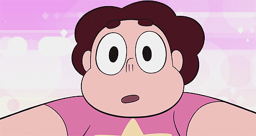
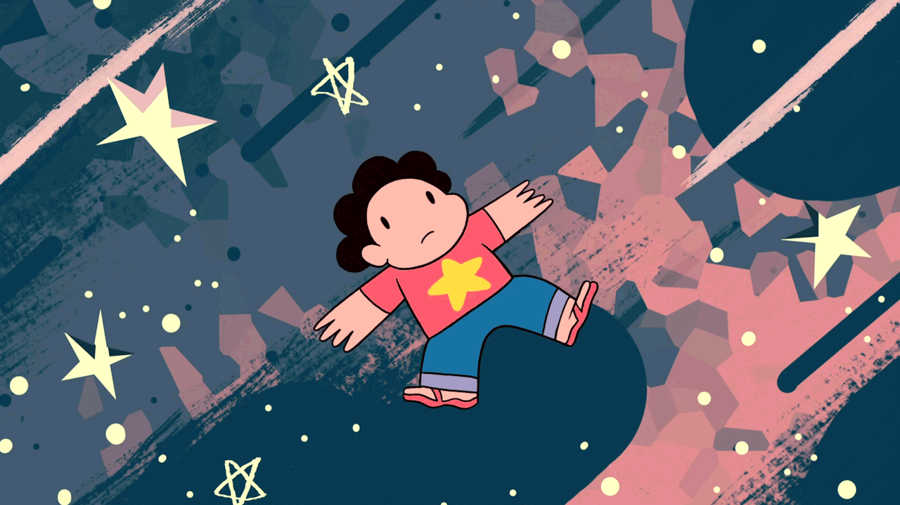
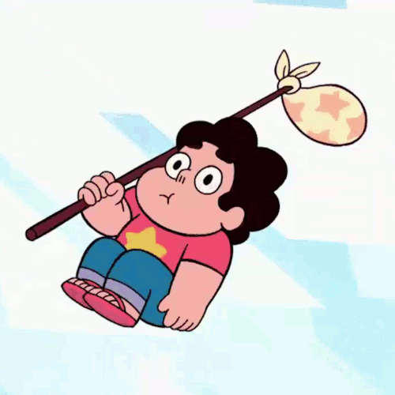
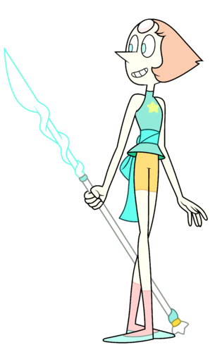
Pearl
푸른 눈, 날카로울 만큼 뾰족한 코, 이마에 위치한 젬이 특징인 "펄(Pearl)"은 스티븐의 보호자이다. 얌전하고 올곧은 성격으로 나이가 몇 천살임에도 아직 상당히 여린 감성을 가지고 있다. 작중에서는 스티븐을 자주 챙겨주고 스티븐과 관련된 일이라면 물불을 가리지 않으며 행여나 무슨 일이라도 생기면 놀라서 구하러 온다. 문화에 박식하고 가르치기를 좋아하는 성격이라, 스티븐에게 여러 지식을 알려주기도 한다.
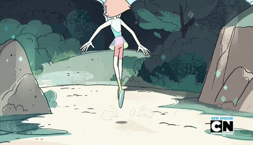
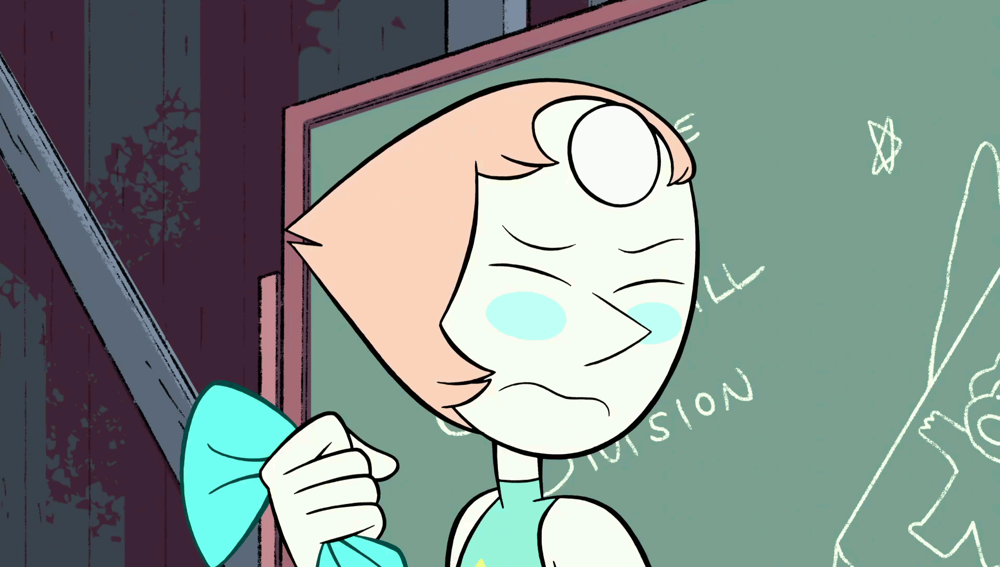
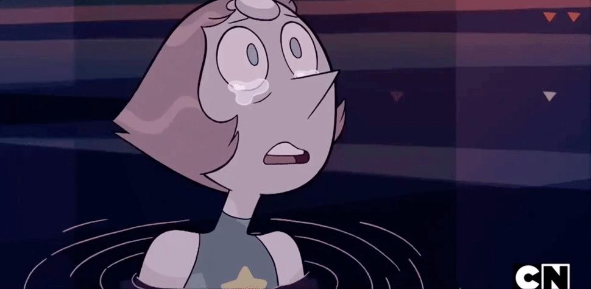
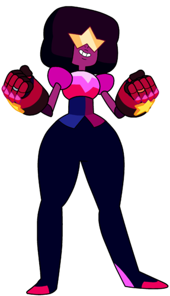
Garnet
크리스탈 젬스의 실질적 리더. 양 손바닥에 젬이 각각 하나씩 총 두 개 박혀있다. 거의 항상 바이저를 쓰고 있으며 소환하는 무기는 자주색 건틀렛. 스티븐에겐 이모 또는 고모와 같은 역할로 항상 진지하며 웃을 때가 거의 없다. 평소에 말도 별로 없고 무뚝뚝해 보이지만 펄이나 애머시스트가 스티븐을 놀리면 자주 도와준다. 사파이어의 능력으로 인해 미래를 볼 수 있는 능력이 있다. 미래에 일어날 수많은 가능성을 보는 것이기에 예상이 빗나가거나 실수하는 경우도 있다.
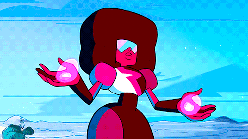
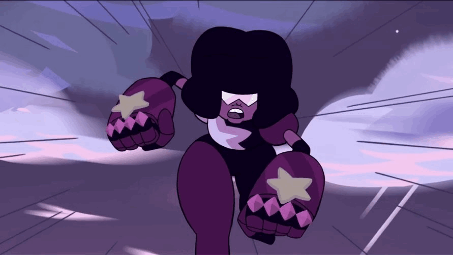
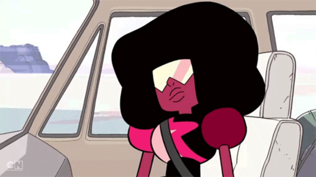
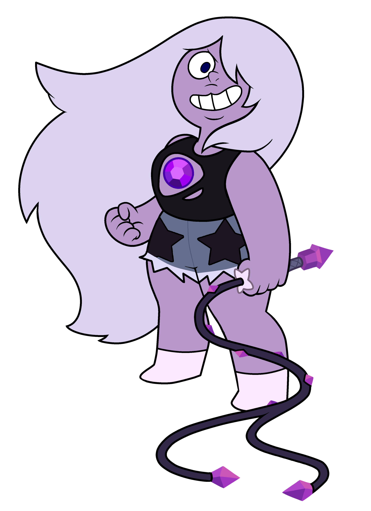
Amethyst
가슴에 쿼츠 계열의 자수정이 박혀있다. 스티븐과 같이 장난기가 많고 유쾌한 성격이다. 다른 두 젬들이 양육자의 역할이라면, 애머시스트는 형제 정도의 역할이다. 털털하고 재밌지만, 산만하고 위급 상황에서도 진지하지 않아 사고를 치고 다닌다. 이런 성격 때문에 펄이나 가넷에게 꾸중을 많이 듣는다. 자기 자신에 대한 컴플렉스가 심한 편. 출신이 좋지않아 스스로를 약하고 가치없는 존재라고 생각한다.